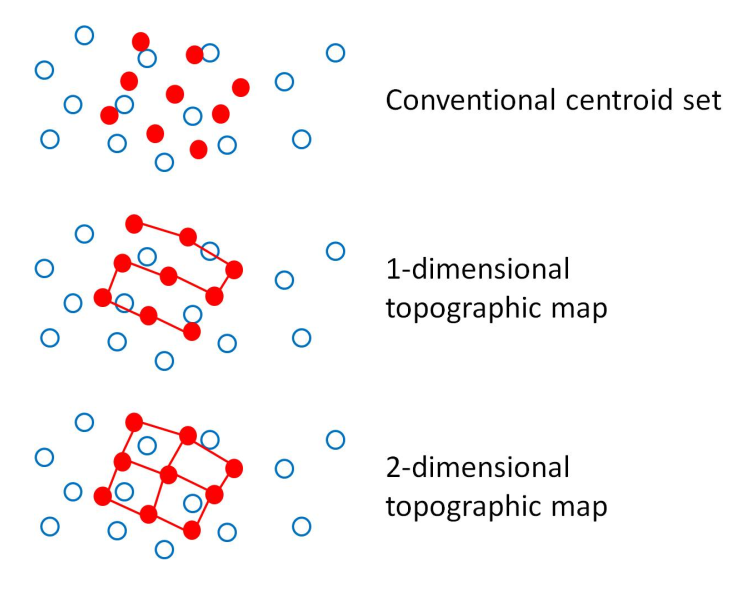
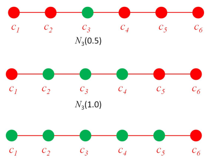

This is an iterative algorithm for grouping data into distinct sets.
See slides for examples
We can now ask the question: is the set of centroids, created via -means globally optimal? I.e. does the following hold?
No! -means is only guaranteed to find a local optimum with it's final result being dependent on the initial centroid guesses
In -means we calculate the distances between all data points and all centroids before any update takes place. Instead, we can update centroid locations based on seeing a single data point
Online clustering updates centroids with each sample using the following equation:
Where is the learning rate.
Our solution to this is to start with a big value of and to shrink it over time.
Where is the time scale, determining how fast will decrease.
This process is similar to that of annealing
Choose the number of centroids,
Randomly choose an initial codebook
:
where is a small learning rate that reduces with time as determined by the equation:
where is the timescale
Neighbourhood structuring is the process by which each point in the centroid set is connected it's nearest neighbours. The number of neighbours that it is directly connected to depends on the number of dimensions the structure is imposed for.

We can imagine the connections between these centroids in a neighbourhood as elastic bands whereby when we move one centroid closer to a data point to further reduce the distortion of the dataset we also move all other centroids by an amount proportional to how closely connected each centroid is to the one we just directly moved.
In 1 Dimension each centroid is directly connected to one other centroid, with ultimately each centroid being connected to all other centroids in the neighbourhood.
To define a neighbourhood structure you require a definition of distance between the members of the neighbourhood.
So for a neighbourhood centered on centroid with distance we can define the set of all other centroids where the indices of the centroids are less than or equal to as:
An illustration of a 1D neighbourhood defined with a range of distances can be seen below

Note that these neighbourhoods are defined on the centroid index not the centroid coordinates!
Similarly we can define our neighbourhood structure in 2 dimensions with the equation:
The aim of Constrained clustering using self-organising or topographic maps is to discover dimensional structure of high dimensional data by clustering whilst constraining our centroids to lie in a dimensional 'elastic'
Where the dimensions are the dimensionality of the neighbourhood structure.
Recalling our equation for Online Clustering
We can now define our update rule for Constrained clustering using a topographic map as:
Where indicates how close the centroid is to the centroid closest to
Any candidate function must satisfy:
One possible function is:
Where is the neighbourhood width or strength of the elastic
In choosing a value for we can employ Simulated Annealing whereby we initially choose a high value to allow for broad cooperation between centroids but gradually reduce the value as the algorithm runs.
One scaling factor could be:
where is the timescale and is the initial neighbourhood weight